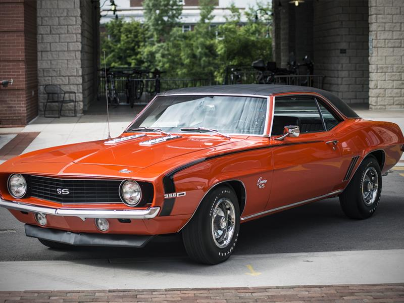

No surprise here either, as we round out the classic muscle trifecta with the renowned Chevy Camaro. While the earlier iterations of the second generation weren’t bad at all (especially the Z/28), the first generation Camaro really solidified and conveyed exactly what the Camaro was meant to be: a heavy-hitting pony car to tackle the Mustang. There were 8 engine options when the car was first released, and by the end of the first generation, that list of choices grew to 12 engines strong. With the massive engine bay and a little creativity, the car could easily handle damn-near any swap you could throw at it. There were also quite a few transmission options, including a 2 or 3 speed automatic and a 3 or 4-speed manual. There’s plenty of literature out there not only for the classic Camaros, but for most classic muscle cars too; many people have gone down this path and taken notes along the way to help future car restoration projects go off with fewer hitches. With guides readily available and parts circulating the aftermarket, this should prove to be a fun and interesting project car.
